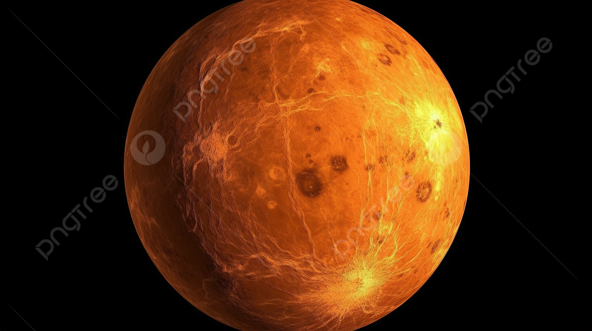

نظرة عامة
الزهرة هو ثاني كوكب من الشمس، ويُعرف بكونه الكوكب الأكثر سخونة في النظام الشمسي. يطلق عليه أيضًا "توأم الأرض" بسبب حجمه وتركيبه المشابه.
خصائص الزهرة
- القطر: حوالي 12,104 كم
- درجة الحرارة السطحية: تصل إلى 471 درجة مئوية
- مدة اليوم: 243 يوم أرضي
- الغلاف الجوي: يتكون بشكل رئيسي من ثاني أكسيد الكربون والنيتروجين
معرض الصور

صورة لكوكب الزهرة مع الغلاف الجوي الكثيف.